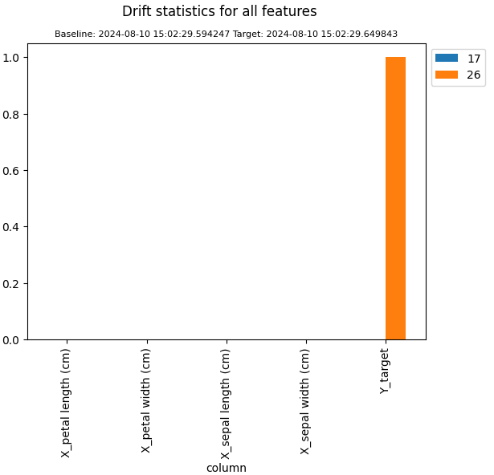

Model Drift¶
Monitoring model drift is similar to monitoring data drift. However monitoring model drift is more complex as models have several components that can change over time: input features, targets (predictions) and respective metrics. Also models can be updated, retrained, or replaced over time, which means we can have multiple versions of a model’s input, targets and metrics. omega-ml provides a ModelDriftMonitor class that allows to monitor all of these components of model drift.
To illustrate model drift monitoring, consider the following example. We use the iris data from the sklearn package, and take two snapshots of the data. We then compare the two snapshots and plot the results.
import omegaml as om
from omegaml.backends.monitoring import ModelDriftMonitor
from sklearn import datasets
x, y = datasets.load_iris(return_X_y=True, as_frame=True)
with om.runtime.experiment('foo', recreate=True) as exp:
mon = ModelDriftMonitor(tracking=exp)
mon.snapshot(X=x, Y=y, catcols=['target'])
mon.snapshot(Y=y[0:5], catcols=['target'])
stats = mon.compare()
stats.plot()
As expected, the two snapshots show a difference only in the target distribution.
To investigate, we can plot the distribution of the baseline and target snapshots. The plot shows the relative frequency of each unique value in both the baseline and the target snapshot. The relative frequency means that the same number of values are sampled from the distribution of the Y_target column in both snapshots.
stats.plot('Y_target')
To show the comparison of the actual distributions, i.e. in terms of the absolute frequency of each unique value in Y_target, specify sample=False. In this example, the target snapshot contained only the first 5 rows of the original data, while the baseline contained all rows. Therefore each value is less frequent in the target snapshot.
stats.plot('Y_target', sample=False)
The underlying statistics are available as the drift statistics dataframe. Note that the plot is a relative comparison of the two snapshots, that is the baseline and target snapshots are compared to each other on the basis of the percentage of each target.
stats.df
To select a specific column, statistic or sequence of snapshots, use the